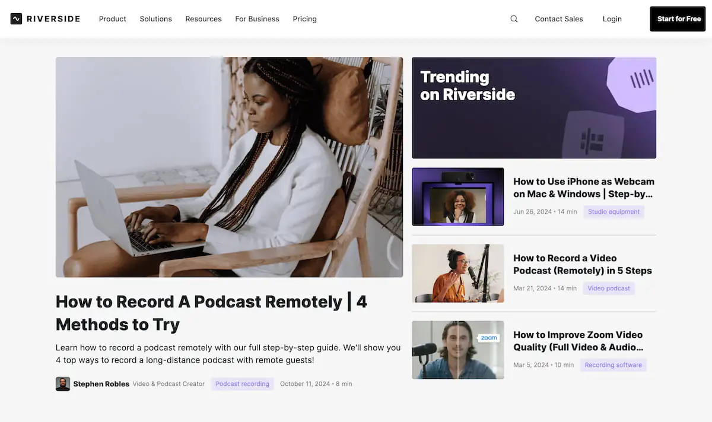
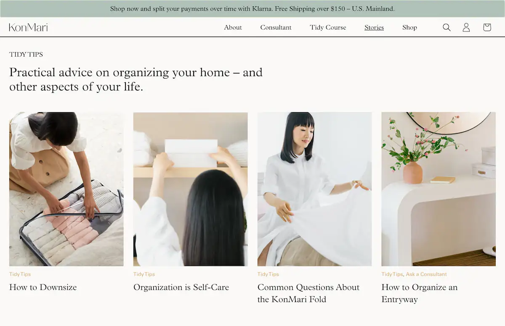
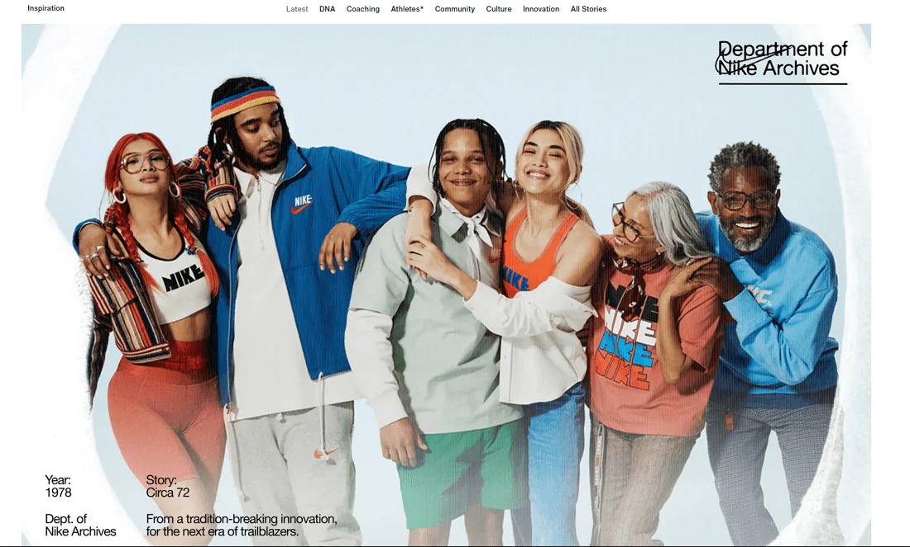
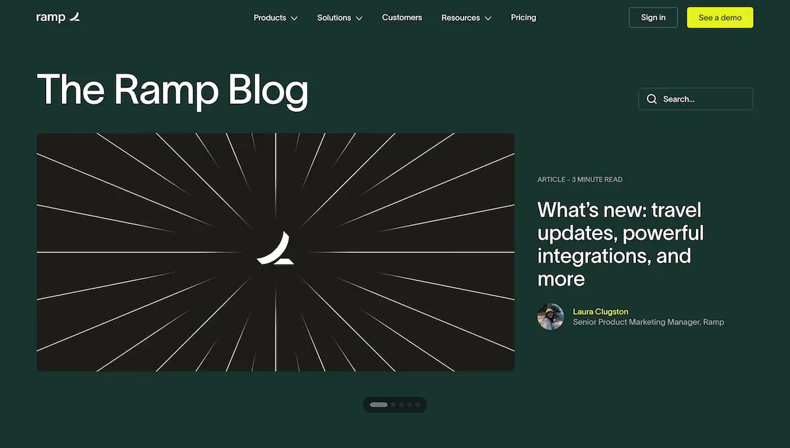
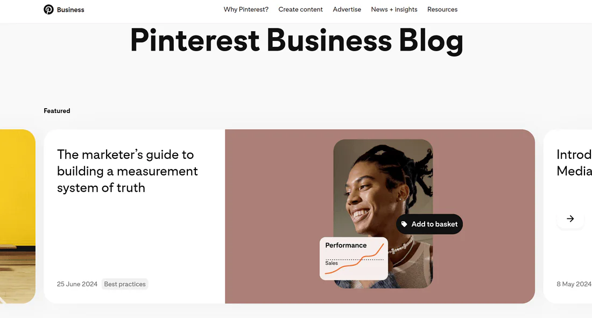
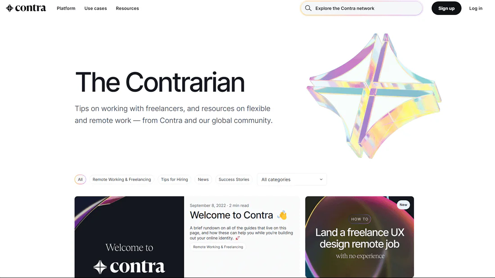
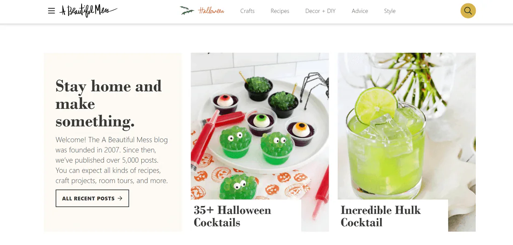
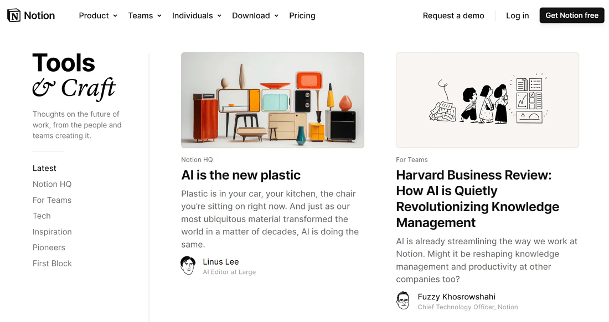
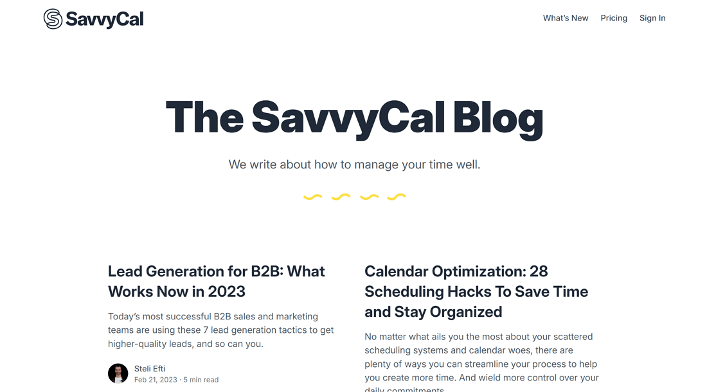

18 Best Blog Website Examples to Inspire You
Here are 18 beautiful blog designs that showcase the best of creativity, user experience and functionality for 2025.
- Riverside.fm
- Clean and minimalist design that focuses on content.
- Sticky table of contents for easy navigation through long articles.
- Consistent use of typography and subtle color accents.
- Jules Acree
- Light and airy design with a minimalist vibe.
- Soft and neutral colour scheme that fits the blog’s theme.
- Sidebar with related posts and social media links for easy navigation.
- KonMari
- The minimal design matches the KonMari philosophy of decluttering, making it easy to navigate and focus on the content.
- The high res images and well curated sections makes it look polished and professional which engages the audience and reinforces the brand.
- Overall, it’s a user friendly design informative and visually pleasing, so good for readers looking for lifestyle inspiration and tips.
- Nike
- The blog is a compelling mix of brand identity and storytelling. Storytelling voices in the articles adds depth and connects the brand’s mission to its community.
- The images with text engages the reader and reinforces Nike’s innovation and culture.
- Visually rich and media heavy posts keeps the reader entertained and delivers the brand message making it great for engagement and brand connection.
- Ramp
- The clean and modern design makes it easy for readers to focus on the content without distractions.
- The professional colour scheme reinforces the brand’s identity as a reliable and trustworthy source of information.
- The clear CTAs throughout the blog encourage reader engagement and drive conversions, making it an effective tool for building relationships with the audience.
- The visually rich design captures the essence of Pinterest as a platform for creativity and inspiration, making it appealing to its target audience.
- The use of multimedia content adds depth and variety to the blog, keeping readers engaged and encouraging them to explore more content.
- Overall, the Pinterest blog effectively combines visual appeal with valuable content, making it a great example of an engaging and inspiring blog design.
- Contra
- The clean and minimalist design makes it easy for readers to focus on the content without distractions.
- The professional colour scheme reinforces the brand’s identity as a reliable and trustworthy source of information.
- The clear CTAs throughout the blog encourage reader engagement and drive conversions, making it an effective tool for building relationships with the audience.
- A Beautiful Mess
- The colorful and creative design captures the essence of A Beautiful Mess as a brand focused on DIY projects and lifestyle content, making it appealing to its target audience.
- The use of multimedia content adds depth and variety to the blog, keeping readers engaged and encouraging them to explore more content.
- Overall, the A Beautiful Mess blog effectively combines visual appeal with valuable content, making it a great example of an engaging and inspiring blog design.
- Notion
- The minimal design matches Notion’s focus on organization and productivity, making it easy to navigate and focus on the content.
- The high res images and well curated sections makes it look polished and professional which engages the audience and reinforces the brand.
- Overall, it’s a user friendly design informative and visually pleasing, so good for readers looking for productivity tips and inspiration.
- SavvyCal
- The clean and modern design makes it easy for readers to focus on the content without distractions.
- The professional colour scheme reinforces the brand’s identity as a reliable and trustworthy source of information.
- The clear CTAs throughout the blog encourage reader engagement and drive conversions, making it an effective tool for building relationships with the audience.
- Ensure readability through clean layouts, white space, and effective typography.
- Use well placed CTA buttons to encourage user interaction.
- Make sure to guide visitors with optimized navigation and search functionality.
The Riverside.fm blog has a clean and minimalist layout that puts its content front and center.
The homepage is simple and organized with a grid layout for featured articles. It uses modern typography with plenty of space and a sans-serif font. You can also see subtle colour accents throughout that don’t overwhelm the reader.
One of the coolest features of the Riverside.fm blog is the sticky table of contents on individual article pages. This allows readers to jump through long-form content with ease and get to the sections that interest them.
Why It Works:Jules Acree’s blog has a light and airy design with a minimalist vibe. The homepage has big and bright visuals for each blog’s featured image, paired with clean typography.
The colour scheme is soft and neutral with whites, greys and pastels that are perfect for a wellness and lifestyle blog.

One of the standout features of the Jules Acree blog is the use of a sidebar on article pages. This sidebar includes related posts, a search bar and social media links, making it easy for readers to explore more content and connect with the brand.
Why It Works:The KonMari blog has a clean and organized design that reflects the brand’s focus on decluttering and simplicity. The homepage features a grid layout with large images and clear typography.
The colour scheme is simple and elegant with whites, greys and a pop of blue that adds a touch of personality without overwhelming the reader.
The main feature to note is the way the blog is organized. The layout is tidy and blog posts are split into sub-menus under the “Stories” section including the sub-sections Tidy Tips, KonMari Philosophy, Notes from Marie and more.
Why It Works:Nike’s blog has a bold and dynamic design that reflects the brand’s energy and athleticism. The homepage features large, high-quality images and a grid layout that highlights featured articles.
The colour scheme is vibrant with a mix of black, white and the iconic Nike red that creates a strong visual impact.
One of the standout features of the Nike blog is the use of multimedia content. The blog includes videos, podcasts and interactive elements that make it more engaging and immersive for readers.
Why It Works:Ramp’s blog has a clean and modern design that focuses on providing valuable content to its readers. The homepage features a simple layout with a mix of images and text that highlights featured articles.
The colour scheme is professional with a mix of blues, greys and whites that creates a sense of trust and reliability.
One of the standout features of the Ramp blog is the use of clear calls to action (CTAs) throughout the site. Each article includes prominent CTAs that encourage readers to take action, whether it’s signing up for a newsletter, downloading a resource or exploring related content.
Why It Works:Pinterest’s blog has a visually rich and engaging design that reflects the platform’s focus on creativity and inspiration. The homepage features a grid layout with large images and clear typography that highlights featured articles.
The colour scheme is vibrant with a mix of reds, whites and greys that creates a strong visual impact.
One of the standout features of the Pinterest blog is the use of multimedia content. The blog includes videos, podcasts and interactive elements that make it more engaging and immersive for readers.
Why It Works:Contra’s blog has a clean and minimalist design that focuses on providing valuable content to its readers. The homepage features a simple layout with a mix of images and text that highlights featured articles.
The colour scheme is professional with a mix of blues, greys and whites that creates a sense of trust and reliability.
One of the standout features of the Contra blog is the use of clear calls to action (CTAs) throughout the site. Each article includes prominent CTAs that encourage readers to take action, whether it’s signing up for a newsletter, downloading a resource or exploring related content.
Why It Works:A Beautiful Mess’s blog has a colorful and creative design that reflects the brand’s focus on DIY projects, crafts and lifestyle content. The homepage features a grid layout with large images and clear typography that highlights featured articles.
The colour scheme is vibrant with a mix of pinks, blues and whites that creates a fun and playful atmosphere.
One of the standout features of the A Beautiful Mess blog is the use of multimedia content. The blog includes videos, podcasts and interactive elements that make it more engaging and immersive for readers.
Why It Works:Notion’s blog has a clean and organized design that focuses on providing valuable content to its readers. The homepage features a simple layout with a mix of images and text that highlights featured articles.
The colour scheme is simple and elegant with whites, greys and a pop of blue that adds a touch of personality without overwhelming the reader.
The main feature to note is the way the blog is organized. The layout is tidy and blog posts are split into sub-menus under the “Stories” section including the sub-sections Tidy Tips, KonMari Philosophy, Notes from Marie and more.
Why It Works:SavvyCal’s blog has a clean and modern design that focuses on providing valuable content to its readers. The homepage features a simple layout with a mix of images and text that highlights featured articles.
The colour scheme is professional with a mix of blues, greys and whites that creates a sense of trust and reliability.
One of the standout features of the SavvyCal blog is the use of clear calls to action (CTAs) throughout the site. Each article includes prominent CTAs that encourage readers to take action, whether it’s signing up for a newsletter, downloading a resource or exploring related content.
Why It Works:Conclusion / Key Takeaways
Having a strong blog design is key to grabbing and keeping your readers’ attention.
Here are the takeaways to keep in mind:

Learn What's Working Now from 120+ Top Landing Pages in our FREE Guide
Get Access to 120+ Landing Page Swipes from Creators, Digital Marketers and Experts + insights and steps to boost your landing page conversions.
Download the Lookbook Now